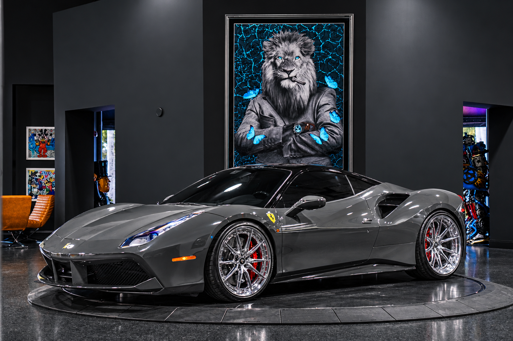

Tahun Rilis: 2015
488 GTB diperkenalkan pada 2015 sebagai pengganti 458 Italia. Perubahan terbesarnya ada di mesin V8 3,9 liter dengan dua turbo menggantikan mesin atmosferik terdahulu.
Dengan girboks dual-clutch 7 percepatan, mobil ini berakselerasi 0-100 km/jam dalam sekitar 3 detik. Bodinya dirancang untuk menambah downforce tanpa mengorbankan hambatan angin.
488 GTB diproduksi sampai 2019 dan digantikan oleh F8 Tributo.
← Kembali ke Utama